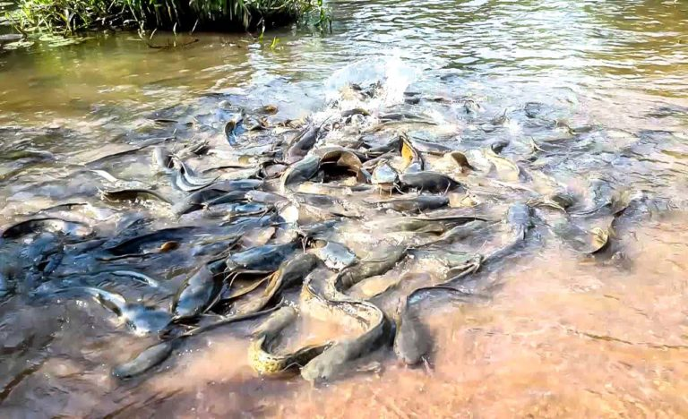

Silures de Dafra
Historique
Les silures sacrées de Dafra sont une attraction culturelle et spirituelle située à proximité de Bobo-Dioulasso, au Burkina Faso. Ces poissons, considérés comme sacrés par les habitants locaux, vivent dans un bassin naturel alimenté par une chute d'eau, dans une gorge entourée de végétation luxuriante.
La légende raconte que les silures de Dafra sont des esprits ancestraux protecteurs et qu'ils possèdent des pouvoirs mystiques. Les habitants de la région, en particulier ceux de l'ethnie Bobo, vénèrent ces poissons depuis des siècles et les considèrent comme des intermédiaires entre le monde des vivants et celui des esprits.
Le site de Dafra est un lieu de pèlerinage pour de nombreuses personnes qui viennent y faire des sacrifices et des offrandes afin de demander des bénédictions, de la guérison, et de la protection. Les cérémonies impliquent souvent l'immolation de poulets, de moutons ou de chèvres, dont le sang est versé dans le bassin pour honorer les silures sacrées.
Description
Le bassin des silures sacrées de Dafra est situé dans une gorge pittoresque, accessible par un sentier de randonnée qui traverse des paysages naturels magnifiques. Le bassin est alimenté par une cascade, créant un environnement serein et propice à la méditation et à la prière.
Les silures de Dafra sont de grande taille et facilement visibles dans les eaux claires du bassin. Les visiteurs sont souvent impressionnés par leur apparence majestueuse et leur comportement calme. Les poissons semblent habitués à la présence humaine et sont généralement dociles.
Autour du bassin, il y a plusieurs autels et espaces dédiés aux sacrifices et aux offrandes. Les visiteurs peuvent observer les rituels traditionnels et participer aux cérémonies sous la direction des prêtres locaux, qui jouent un rôle crucial dans la préservation des traditions et des croyances associées aux silures sacrées.
Le site de Dafra est non seulement un lieu de culte, mais aussi un important centre culturel qui attire des chercheurs, des anthropologues et des touristes curieux de découvrir les pratiques religieuses et les traditions du Burkina Faso. Les silures sacrées de Dafra sont un symbole de l'héritage spirituel et culturel de la région, témoignant de la profonde connexion entre les habitants et leur environnement naturel.